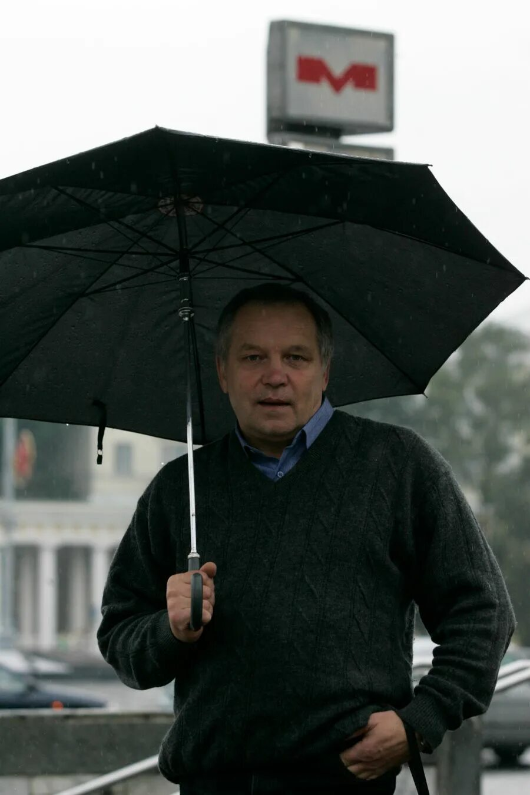

| • Схема • | • Достопримечательности • | • Полезные ссылки • | • Их именами названы улицы • | • Отзыв о поездке • |
|
|
Каменная горка
Кунцевщина
Спортивная
Пушкинская
Молодёжная
Фрунзенская
Немига
Купаловская
Первомайская
Пролетарская
Тракторный завод
Партизанская
Автозаводская
Могилёвская
Юбилейная площадь
Площадь Франтишка Богушевича Вокзальная Ковальская Слобода Аэродромная Неморшанский Сад Слуцкий Гостинец Малиновка Петровщина Михалово Грушевка Институт культуры Площадь Ленина Октябрьская Площадь Победы Площадь Якуба Коласа Академия наук Парк Челюскинцев Московская Восток Борисовский тракт Уручье |
Добро пожаловать в Минск!
Очень рад, что вы зашли на сайт, посвящённый лучшему на свете городу - Минску!
И пока вы не ушли на прогулку по сайту, Нажмите сюда, чтобы услышать голос Владимира Баклейчева  |